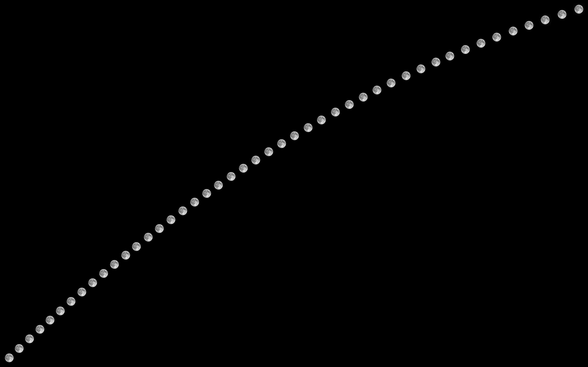
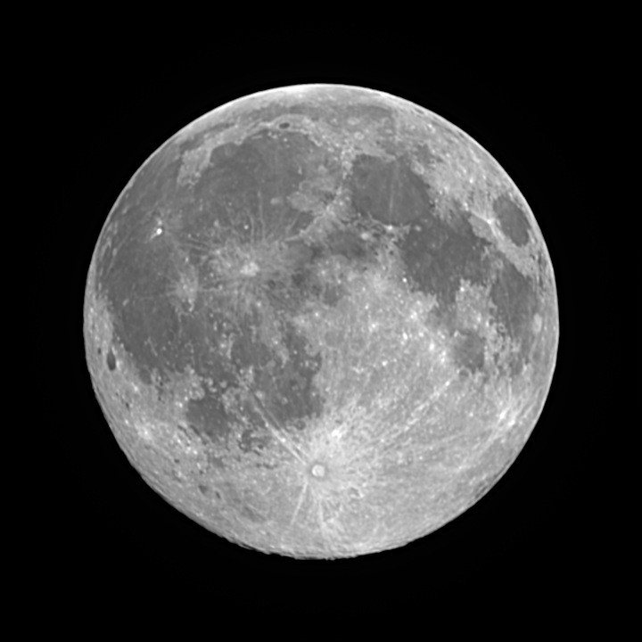

Night log · Sunday 25 October 2026
The full Moon, climbing out of the east
The plan
The scope's scheduler had already called the night off. At 3pm the forecast gave 80–100% cloud while the Moon was up, and the night before had been too windy. By 7pm the wind had dropped and the sky was clear, so the scope went out anyway.
The Moon was 99.7% lit, a few hours short of full, and rising in the east-south-east. That's a direction the back garden can see, at least until the Moon swings round behind the house. Our measured skyline put the Moon clear of the fence from about 19:30 and behind the roof from about 22:20. That gave a window of three hours. It was too short for a phase-set session, but plenty for watching the Moon climb.
- Captured
- 19:15–22:11
- Frames
- 172 for the arc + 180 in a burst
- Exposure
- 7–8 ms · gain 0
- Filter
- IR cut
- Mount
- Tripod, alt-az
Steering without a compass
I pointed the scope at the Moon with the phone app on the plain tripod, then closed the app so Claude could take over. The scope's compass was out again, so the mount thought it was pointing somewhere in the north. It didn't matter, because nothing tonight relied on where the mount thought it was. Claude nudged the mount 10 arcminutes in each direction and measured how far the Moon moved in the picture. From then on it could steer by the image alone.
One side effect is that with the wrong idea of where it was pointing, the mount's tracking was slightly off. The Moon crept across the frame at about a quarter of a frame every few minutes. So the capture loop checked where the Moon was after every set of frames and moved it back to the middle.
A string of moons
Every 4 minutes the scope took four frames. For each set, Claude kept the sharpest and placed it on a black canvas at the exact spot in the sky the Moon was in at that moment, worked out from the frame's timestamp. Forty-five Moons, from just above the fence to just below the roof:

Compare it with the string from 21 October. That one was shot from the front of the house with the Moon due south at its highest, so it rose, peaked and sank in a gentle curve. Tonight's was caught early, while the Moon was still climbing steeply out of the east, so the line runs up the sky at a slant. It still curves slightly: it gets flatter towards the top right as the Moon heads towards its highest point.
A lucky stack
At 21:28, with the Moon about 45° up, the arc took a ten-minute break for a burst of 180 frames. That turned out to be too long without re-centring. With the tracking slightly off, the Moon drifted towards the edge of the frame, and the last few frames missed it altogether. Worse, a Moon cut off by the frame edge scores as very sharp, because the edge is a crisp line. The first stack picked exactly those frames and came out as a mess. After throwing out every frame where the Moon touched the edge, 95 whole-disc frames were left. The sharpest 28 of those were lined up and averaged.

A full Moon looks quite different from the gibbous one four nights ago. The Sun is now straight overhead from the Moon's point of view, so there are no shadows, and the craters that stood out along the shadow line have flattened out. What shows instead is how bright or dark the ground is. Tycho's rays stretch across most of the southern half, and Copernicus shines in the dark plains to the left of centre.
What next
The plan for next time is a burst in shorter blocks, with a re-centre between each, so no frames are lost to drift. The Moon went behind the roof at about 22:15, and rain was forecast for the next morning. Clear sky is next forecast for Tuesday and Wednesday, but with a bright Moon. Those nights will go to emission nebulae through the dual-band filter, with the Pacman and Wizard Nebulae top of the list.